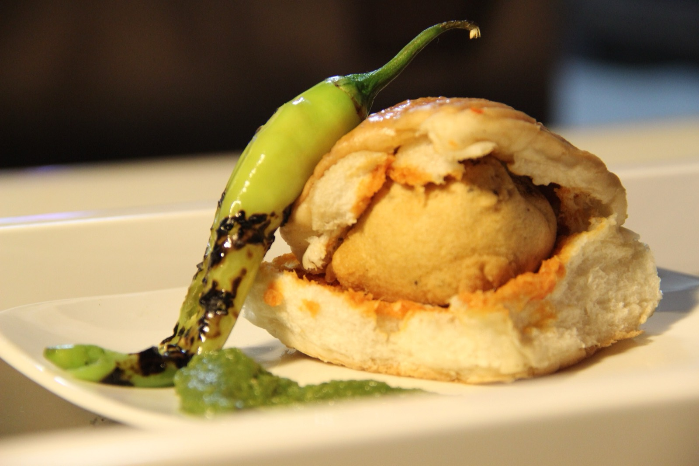

Contains: gluten, peanuts, mustard
Checked against the ingredient list for milk, egg, fish, crustaceans, tree nuts, peanuts, sesame, mustard, soy and gluten. Nothing else is checked, and brands vary, so read the label on anything you have not bought before.
Ingredients
Quantities for 4.
- 600g, boiled and roughly mashed Potato
- 1.5 cups Besanfor the batter
- 8 rolls Pav
- 10 cloves Garlic
- 4 Green Chilli
- 1 tbsp, grated Ginger
- 1 tsp Mustard Seeds
- 1/2 tsp Turmeric
- a pinch Asafoetida
- 1 sprig Curry Leaves
- a handful Coriander Leavesoptional
- 2 tbsp Peanutomit from the chutney for a nut-free versionoptional
- 1 tbsp Chilli Powderfor the chutneyoptional
- 3 tbsp desiccated Coconutfor the chutneyoptional
- 1/2 Lemonoptional
- for deep frying Neutral Oil
- to taste Salt
Cookware
stovetop, kadhai
Before you start
- Mash the potato coarsely, leaving some lumps. A smooth mash makes a pasty vada.
- The batter should coat the back of a spoon thickly. Too thin and it slides off in the oil; too thick and it fries into a shell.
- The dry garlic chutney is not optional in Mumbai. It is what makes the sandwich taste like vada pav rather than a potato bun.
Method
- For the dry chutney, dry roast the peanuts, coconut and 6 garlic cloves separately until fragrant, then grind coarsely with the chilli powder and salt. Set aside.
- Crush the remaining garlic, the green chillies and ginger to a coarse paste.
- Heat 2 tbsp oil, splutter the mustard seeds, add the asafoetida and curry leaves, then the garlic-chilli paste. Fry 1 minute, add the turmeric, then fold through the mashed potato, coriander, lemon and salt. Cool and shape into 8 balls.
- Whisk the besan with a pinch of turmeric, salt and enough water to make a thick, smooth coating batter. Rest it 10 minutes.
- Heat the frying oil to 180C. Dip each ball in batter, let the excess drip off and lower it in. Fry 4-5 minutes until pale gold and crisp, turning once. Drain on a rack, not paper.Fry a few whole green chillies alongside; slit them first so they do not burst.
- Split the pav without cutting all the way through, spread the dry chutney generously inside, press in a hot vada and serve at once with the fried chillies.
Storage
Eat immediately; this does not keep well assembled. The potato mixture can be made a day ahead and refrigerated, and fried vadas reheat acceptably in a hot oven for 6-8 minutes.
Nutrition Medium estimate
| Per serving282 g | Per 100 g | |
|---|---|---|
| Calories | 594+ kcal | 211+ kcal |
| Protein | 19.5+ g | 7+ g |
| Carbohydrate | 79.9+ g | 28+ g |
| of which sugars | 9.4+ g | 3+ g |
| Fibre | 10.4+ g | 4+ g |
| Fat | 23.0+ g | 8+ g |
| of which saturated | 5.8+ g | 2+ g |
| of which unsaturated | 15.3+ g | 5+ g |
The + means ingredients given to taste rather than by weight are counted as zero, so the true figure is a little higher than shown. Worked out from the listed quantities. Some of the ingredient list is given to taste rather than by weight, so treat these as a guide. Ingredients given to taste rather than by weight are counted as zero, so the real figure is a little higher than this. The + says so. Some ingredients have no exact match in the nutrient database and use the nearest equivalent: curry leaves. Estimated from raw ingredients using USDA FoodData Central. Cooking changes are not modelled, and added salt is excluded, so sodium is not given.
Written and checked against sources, not cooked in a test kitchen. Times, yields and keeping times are guides, and the allergen and nutrition figures are worked out from the ingredient list rather than measured. Use your own judgement, particularly on doneness and on anything you are storing or reheating. More in About.